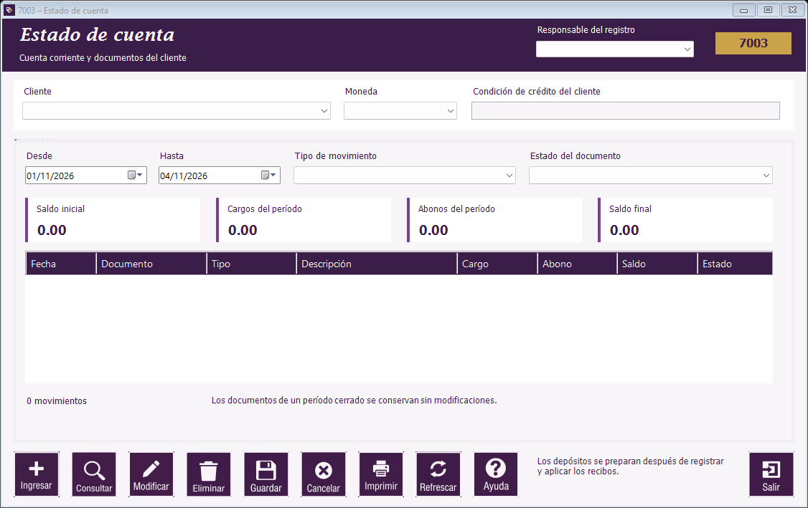

|   |
| |
Guía de Movimientos de clientes | Estado de cuenta | Cargos y ajustes | Recepción de pagos | Depósitos a Bancos | Consulta de recibos | Botones de Movimientos de clientes | Mensajes frecuentes de Movimientos de clientes

Ubicación de los campos y del botón Ayuda en el formulario.
Estas pantallas permiten consultar la deuda de un cliente, registrar cargos o ajustes y dar seguimiento a sus recibos.
| Campo / acción | Uso |
|---|---|
| Movimientos de clientes → Estado de cuenta | Consulta cargos, abonos y saldo por cliente y moneda. |
| Movimientos de clientes → Cargos y ajustes | Registra documentos internos, notas y correcciones de deuda. |
| Pagos → Recepción de pagos | Registra dinero recibido y su aplicación a facturas. |
| Pagos → Depósitos a Bancos | Agrupa importes de recibos para el registro bancario. |
| Pagos → Consulta de recibos | Consulta recibos, depósitos y facturas relacionadas. |
Un abono por ajuste corrige la deuda. Un recibo documenta dinero recibido. Registre cada operación en la pantalla correspondiente.